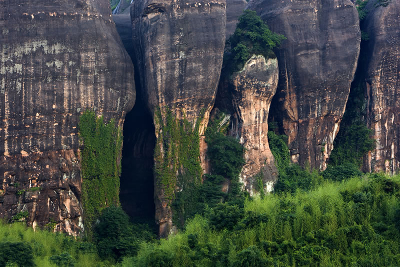
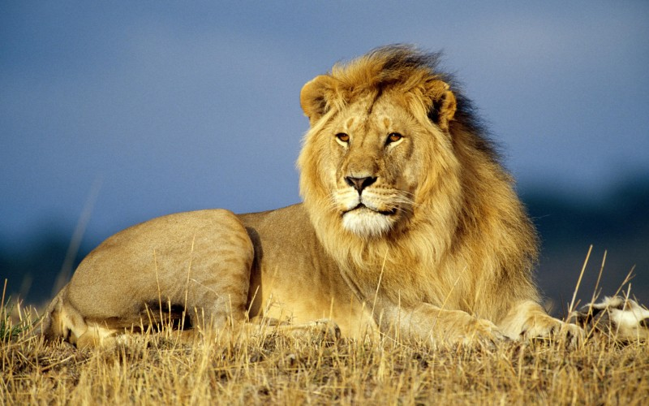

鬼斧神工

这里是树的海洋，这里是鸟的天堂。这里枝连着枝，叶叠着叶。这里没有道路，也没有人烟。但却是动物们的乐园。这里没有销烟，也没有污染。因为这里是地球上的最后一方净土——原始森林。
守护精灵
“景观”的涵意也十分广泛，人类周遭的环境因子，如空气、水、生物、地，都是景观、包括一切可见及可觉察的事物。
神赐的微笑

地球上的物质永无止境地运动着。暴露在地壳表面的大部分岩石都处在与其形成时不同的物理化学条件下，而且地表富含氧气、二氧化碳和水，因而岩石极易发生变化和破坏。
蔚蓝的包容
岩石，地质勘探的主要对象。是固态矿物或矿物的混合物，其中海面下的岩石称为礁、暗礁及暗沙，由一种或多种矿物组成的，具有一定结构构造的集合体，也有少数包含有生物的遗骸或遗迹。
心旷神怡
地球上的物质永无止境地运动着。暴露在地壳表面的大部分岩石都处在与其形成时不同的物理化学条件下，而且地表富含氧气、二氧化碳和水，因而岩石极易发生变化和破坏。
动物世界


岩石，地质勘探的主要对象。是固态矿物或矿物的混合物，其中海面下的岩石称为礁、暗礁及暗沙，由一种或多种矿物组成的，具有一定结构构造的集合体，也有少数包含有生物的遗骸或遗迹。